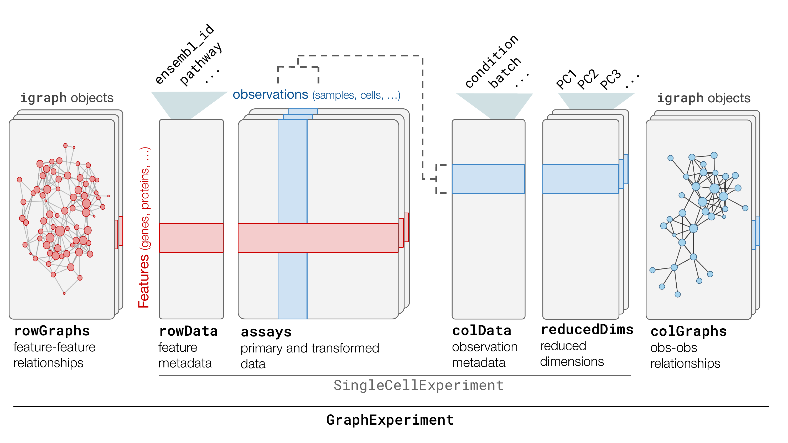

Introduction to the *GraphExperiment* class
Fabricio Almeida-Silva
VIB-UGent Center for Plant Systems Biology, Ghent University, Ghent, Belgium
Yves Van de Peer
VIB-UGent Center for Plant Systems Biology, Ghent University, Ghent, Belgium
Source:
vignettes/GraphExperiment.Rmd
GraphExperiment.RmdIntroduction
Networks (or graphs) have become widely used data representations in
biology, as they can efficiently encode node-node interactions and
neighborhoods. In high-throughput, quantitative omics data (e.g.,
transcriptomics, proteomics, metabolomics, epigenomics, etc), widely
used network representations include gene coexpression, protein-protein
interaction, gene regulatory, and co-abundance networks. While data
structures to store quantitative data and associated metadata exist
(e.g., SummarizedExperiment,
SingleCellExperiment, SpatialExperiment, etc),
support for networks describing how features relate to each other is
currently missing. GraphExperiment is an S4 class that
extends SingleCellExperiment (Amezquita et al. 2020) to include an additional
container for networks associated with assay features.
Anatomy of a GraphExperiment object
Since the GraphExperiment class extends the
SingleCellExperiment class, all
SingleCellExperiment slots are present in
GraphExperiment, including:
-
assays: list of matrices with primary (e.g., counts) and transformed (e.g., log-normalized counts, TPM, etc) data, with features in rows and observations in columns. -
colData: a data frame with column (observation) metadata, such as sample ID, condition, batch ID, genotype, etc. -
rowData: a data frame with row (feature) metadata, such as gene ID, genomic coordinates, functional annotation, etc. -
reducedDims: list of data frames with reduced dimensions, such as PCA, t-SNE, and UMAP embeddings.
Compared to SingleCellExperiment objects,
GraphExperiment provides an additional container:
-
graphs: list ofigraphobjects containing graphs, including (but optional) node and edge attributes.

The GraphExperiment class.
The igraph data class from the igraph package
is the standard data structure for graph representation in R. If you are
unfamiliar with igraph objects, you can learn more about it
by reading the igraph
vignettes.
Building a GraphExperiment object
GraphExperiment objects can be created from scratch
using the constructor function GraphExperiment(). Below we
will simulate a scRNA-seq count matrix with some gene (row) and cell
(column) metadata, and create a graph based on gene-gene
correlations.
library(GraphExperiment)
set.seed(777) # for reproducibility
# Simulate parts of a `GraphExperiment` object
## Assays
gene_ids <- paste0("gene", seq_len(200))
cell_ids <- paste0("cell", seq_len(100))
mat <- matrix(rpois(20000, 5), ncol = 100, dimnames = list(gene_ids, cell_ids))
mat[1:5, 1:5]
#> cell1 cell2 cell3 cell4 cell5
#> gene1 6 7 5 5 6
#> gene2 5 3 6 3 5
#> gene3 4 5 9 7 2
#> gene4 12 4 5 9 3
#> gene5 6 6 5 2 8
## rowData
rdata <- data.frame(
row.names = gene_ids,
pathway = sample(c("P1", "P2"), size = length(gene_ids), replace = TRUE),
coding = sample(c(TRUE, FALSE), size = length(gene_ids), replace = TRUE)
)
head(rdata)
#> pathway coding
#> gene1 P1 FALSE
#> gene2 P1 TRUE
#> gene3 P2 TRUE
#> gene4 P1 FALSE
#> gene5 P1 TRUE
#> gene6 P1 FALSE
## colData
cdata <- data.frame(
row.names = cell_ids,
cell_type = sample(c("ct1", "ct2"), size = length(cell_ids), replace = TRUE)
)
head(cdata)
#> cell_type
#> cell1 ct2
#> cell2 ct2
#> cell3 ct2
#> cell4 ct1
#> cell5 ct2
#> cell6 ct1
## Graph (with node attribute `degree`)
g <- graph_from_adjacency_matrix(
cor(t(mat)), mode = "undirected", weighted = TRUE
)
g <- set_vertex_attr(g, "degree", value = strength(g))
g
#> IGRAPH 9c444b4 UNW- 200 20096 --
#> + attr: name (v/c), degree (v/n), weight (e/n)
#> + edges from 9c444b4 (vertex names):
#> [1] gene1--gene1 gene1--gene2 gene1--gene3 gene1--gene4 gene1--gene5
#> [6] gene1--gene6 gene1--gene7 gene1--gene8 gene1--gene9 gene1--gene10
#> [11] gene1--gene11 gene1--gene12 gene1--gene13 gene1--gene14 gene1--gene15
#> [16] gene1--gene16 gene1--gene17 gene1--gene18 gene1--gene19 gene1--gene20
#> [21] gene1--gene21 gene1--gene22 gene1--gene23 gene1--gene24 gene1--gene25
#> [26] gene1--gene26 gene1--gene27 gene1--gene28 gene1--gene29 gene1--gene30
#> [31] gene1--gene31 gene1--gene32 gene1--gene33 gene1--gene34 gene1--gene35
#> [36] gene1--gene36 gene1--gene37 gene1--gene38 gene1--gene39 gene1--gene40
#> + ... omitted several edgesTo create a GraphExperiment object from the constructor
function, you would run:
# Create a `GraphExperiment` object
ge <- GraphExperiment(
assays = list(counts = mat),
rowData = rdata,
colData = cdata,
graphs = list(cor = g)
)
ge
#> class: GraphExperiment
#> dim: 200 100
#> metadata(0):
#> assays(1): counts
#> rownames(200): gene1 gene2 ... gene199 gene200
#> rowData names(3): pathway coding cor__degree
#> colnames(100): cell1 cell2 ... cell99 cell100
#> colData names(1): cell_type
#> reducedDimNames(0):
#> mainExpName: NULL
#> altExpNames(0):
#> graphs(1): corIf you’re familiar with SummarizedExperiment and
SingleCellExperiment objects, you will certainly recognize
nearly everything you see in ge. Compared to
SingleCellExperiment objects, the only difference here is
in the last row, which indicates that this object contains a
graph named ‘cor’.
Importantly, since nodes of graphs are always in sync with
rownames, feature IDs in rownames and graph node
names need to be the same. For example, attempting to create a
GraphExperiment object with some features from
rownames missing would lead to an error:
# Remove 'gene1' to 'gene10' from the graph and try to recreate object
g2 <- delete_vertices(g, paste0("gene", 1:10))
GraphExperiment(
assays = list(counts = mat),
rowData = rdata,
colData = cdata,
graphs = list(cor = g2)
)
#> Error in `validObject()`:
#> ! invalid class "GraphExperiment" object:
#> 10 feature(s) in 'rownames' are missing from graph 'cor'.Alternatively, you can create a GraphExperiment object
by coercing from an existing (Ranged)SummarizedExperiment
or SingleCellExperiment object. For example:
# Coercing from `SummarizedExperiment`
se <- SummarizedExperiment(list(counts = mat))
ge1 <- as(se, "GraphExperiment")
ge1
#> class: GraphExperiment
#> dim: 200 100
#> metadata(0):
#> assays(1): counts
#> rownames(200): gene1 gene2 ... gene199 gene200
#> rowData names(0):
#> colnames(100): cell1 cell2 ... cell99 cell100
#> colData names(0):
#> reducedDimNames(0):
#> mainExpName: NULL
#> altExpNames(0):
#> graphs(0):Note that the graphs container is still there, but
empty. To access the names of all graphs, you will use the
graphNames() function.
# Get graph names
graphNames(ge) # 'cor'
#> [1] "cor"
graphNames(ge1) # empty (NULL)
#> NULLAccessing graphs and rowData (a.k.a.
‘getters’)
To access graphs in graphs, you can use one of two
getter functions:
-
graphs(x): retrieves all graphs as a simple list ofigraphobjects. -
graph(x, i): retrieves only graph from the list. Note that can be a numeric scalar (index) or a character scalar (name).
The design here is equivalent to assays() versus
assay() for SummarizedExperiment objects.
# Get graphs
graphs(ge)
#> List of length 1
#> names(1): cor
# Get first graph by index
graph(ge, 1)
#> IGRAPH 9c444b4 UNW- 200 20096 --
#> + attr: name (v/c), degree (v/n), pathway (v/c), coding (v/l), weight
#> | (e/n)
#> + edges from 9c444b4 (vertex names):
#> [1] gene1--gene1 gene1--gene2 gene1--gene3 gene1--gene4 gene1--gene5
#> [6] gene1--gene6 gene1--gene7 gene1--gene8 gene1--gene9 gene1--gene10
#> [11] gene1--gene11 gene1--gene12 gene1--gene13 gene1--gene14 gene1--gene15
#> [16] gene1--gene16 gene1--gene17 gene1--gene18 gene1--gene19 gene1--gene20
#> [21] gene1--gene21 gene1--gene22 gene1--gene23 gene1--gene24 gene1--gene25
#> [26] gene1--gene26 gene1--gene27 gene1--gene28 gene1--gene29 gene1--gene30
#> [31] gene1--gene31 gene1--gene32 gene1--gene33 gene1--gene34 gene1--gene35
#> + ... omitted several edges
# Get first graph by index (alternative)
graphs(ge)[[1]]
#> IGRAPH 9c444b4 UNW- 200 20096 --
#> + attr: name (v/c), degree (v/n), pathway (v/c), coding (v/l), weight
#> | (e/n)
#> + edges from 9c444b4 (vertex names):
#> [1] gene1--gene1 gene1--gene2 gene1--gene3 gene1--gene4 gene1--gene5
#> [6] gene1--gene6 gene1--gene7 gene1--gene8 gene1--gene9 gene1--gene10
#> [11] gene1--gene11 gene1--gene12 gene1--gene13 gene1--gene14 gene1--gene15
#> [16] gene1--gene16 gene1--gene17 gene1--gene18 gene1--gene19 gene1--gene20
#> [21] gene1--gene21 gene1--gene22 gene1--gene23 gene1--gene24 gene1--gene25
#> [26] gene1--gene26 gene1--gene27 gene1--gene28 gene1--gene29 gene1--gene30
#> [31] gene1--gene31 gene1--gene32 gene1--gene33 gene1--gene34 gene1--gene35
#> + ... omitted several edges
# Get graph by name
graph(ge, "cor")
#> IGRAPH 9c444b4 UNW- 200 20096 --
#> + attr: name (v/c), degree (v/n), pathway (v/c), coding (v/l), weight
#> | (e/n)
#> + edges from 9c444b4 (vertex names):
#> [1] gene1--gene1 gene1--gene2 gene1--gene3 gene1--gene4 gene1--gene5
#> [6] gene1--gene6 gene1--gene7 gene1--gene8 gene1--gene9 gene1--gene10
#> [11] gene1--gene11 gene1--gene12 gene1--gene13 gene1--gene14 gene1--gene15
#> [16] gene1--gene16 gene1--gene17 gene1--gene18 gene1--gene19 gene1--gene20
#> [21] gene1--gene21 gene1--gene22 gene1--gene23 gene1--gene24 gene1--gene25
#> [26] gene1--gene26 gene1--gene27 gene1--gene28 gene1--gene29 gene1--gene30
#> [31] gene1--gene31 gene1--gene32 gene1--gene33 gene1--gene34 gene1--gene35
#> + ... omitted several edgesCareful readers will notice that this igraph object has
node attributes that were not present in the original graph: ‘pathway’
and ‘coding’. This is because graphs()/graph()
automatically extract rowData variables (if any) and add
them to node attributes. The same happens in the other direction: the
rowData() method for GraphExperiment objects
automatically adds node attributes (if any) to rowData
variables.
# `graphs` and `rowData` are always in sync!
rowData(ge)
#> DataFrame with 200 rows and 3 columns
#> pathway coding cor__degree
#> <character> <logical> <numeric>
#> gene1 P1 FALSE 3.125219
#> gene2 P1 TRUE 4.454433
#> gene3 P2 TRUE 0.873847
#> gene4 P1 FALSE 1.511270
#> gene5 P1 TRUE 0.568855
#> ... ... ... ...
#> gene196 P1 TRUE 0.773387
#> gene197 P2 FALSE 0.857870
#> gene198 P1 TRUE 1.591484
#> gene199 P1 TRUE 2.324144
#> gene200 P1 FALSE -0.887166Variables ‘pathway’ and ‘coding’ were in the original data frame we
used as rowData, but variable ’cor__degree’ was added by
extracting the degree attribute of nodes in graph
cor.
Modifying GraphExperiment objects (a.k.a.
‘setters’)
Like in the SummarizedExperiment and
SingleCellExperiment classes, all getter methods specific
to GraphExperiment objects have a corresponding setter
method. Such methods allow users to modify elements by adding
<- after the getter method. For example, to add or
replace a particular graph, you would use the graph<-
method as follows:
# Create a new graph without correlations between -0.4 and 0.4
fg <- graph(ge, "cor") |>
delete_vertex_attr("pathway") |>
delete_vertex_attr("degree") |>
delete_vertex_attr("coding")
todelete <- abs(E(fg)$weight) <0.4
fg <- delete_edges(fg, which(todelete))
fg
#> IGRAPH 6477697 UNW- 200 202 --
#> + attr: name (v/c), weight (e/n)
#> + edges from 6477697 (vertex names):
#> [1] gene1 --gene1 gene2 --gene2 gene3 --gene3 gene4 --gene4 gene5 --gene5
#> [6] gene6 --gene6 gene7 --gene7 gene8 --gene8 gene9 --gene9 gene10--gene10
#> [11] gene11--gene11 gene12--gene12 gene13--gene13 gene14--gene14 gene15--gene15
#> [16] gene16--gene16 gene17--gene17 gene18--gene18 gene19--gene19 gene20--gene20
#> [21] gene21--gene21 gene22--gene22 gene23--gene23 gene24--gene24 gene25--gene25
#> [26] gene26--gene26 gene27--gene27 gene28--gene28 gene29--gene29 gene30--gene30
#> [31] gene31--gene31 gene32--gene32 gene33--gene33 gene34--gene34 gene35--gene35
#> [36] gene36--gene36 gene37--gene37 gene38--gene38 gene39--gene39 gene40--gene40
#> + ... omitted several edges
# Add filtered graph a new graph named `fcor`
graph(ge, "fcor") <- fg
ge
#> class: GraphExperiment
#> dim: 200 100
#> metadata(0):
#> assays(1): counts
#> rownames(200): gene1 gene2 ... gene199 gene200
#> rowData names(5): pathway coding cor__degree cor__pathway cor__coding
#> colnames(100): cell1 cell2 ... cell99 cell100
#> colData names(1): cell_type
#> reducedDimNames(0):
#> mainExpName: NULL
#> altExpNames(0):
#> graphs(2): cor fcorIf you’d like to replace all graphs at once, you could use the
graphs<- setter. For example, let’s add a few graphs to
the GraphExperiment object we created before by coercing
from SummarizedExperiment:
# Taking a quick look (note: nothing in `graphs`)
ge1
#> class: GraphExperiment
#> dim: 200 100
#> metadata(0):
#> assays(1): counts
#> rownames(200): gene1 gene2 ... gene199 gene200
#> rowData names(0):
#> colnames(100): cell1 cell2 ... cell99 cell100
#> colData names(0):
#> reducedDimNames(0):
#> mainExpName: NULL
#> altExpNames(0):
#> graphs(0):
# Adding graphs from `ge`
graphs(ge1) <- graphs(ge)
ge1
#> class: GraphExperiment
#> dim: 200 100
#> metadata(0):
#> assays(1): counts
#> rownames(200): gene1 gene2 ... gene199 gene200
#> rowData names(5): cor__degree cor__pathway cor__coding fcor__pathway
#> fcor__coding
#> colnames(100): cell1 cell2 ... cell99 cell100
#> colData names(0):
#> reducedDimNames(0):
#> mainExpName: NULL
#> altExpNames(0):
#> graphs(2): cor fcorLastly, you can also rename graphs by updating
graphNames as follows:
# Rename graphs
graphNames(ge1) <- c("correlations", "correlations_filtered_0.4")
ge1
#> class: GraphExperiment
#> dim: 200 100
#> metadata(0):
#> assays(1): counts
#> rownames(200): gene1 gene2 ... gene199 gene200
#> rowData names(5): correlations__degree correlations__pathway
#> correlations__coding correlations_filtered_0.4__pathway
#> correlations_filtered_0.4__coding
#> colnames(100): cell1 cell2 ... cell99 cell100
#> colData names(0):
#> reducedDimNames(0):
#> mainExpName: NULL
#> altExpNames(0):
#> graphs(2): correlations correlations_filtered_0.4Subsetting GraphExperiment objects
In SummarizedExperiment objects, subsetting rows and
columns (using square brackets, [) automatically subsets
rowData and colData besides the assays. The
same is true for SingleCellExperiment objects: subsetting
columns automatically subsets colData and
reducedDims.
Since graphs in GraphExperiment objects are linked to
rows, subsetting rows of a GraphExperiment object
automatically subsets rows of the assays,
rowData, and all graphs in graphs. For
example:
# Subsetting `GraphExperiment` object
ge_subset <- ge[1:10, ]
ge_subset
#> class: GraphExperiment
#> dim: 10 100
#> metadata(0):
#> assays(1): counts
#> rownames(10): gene1 gene2 ... gene9 gene10
#> rowData names(7): pathway coding ... fcor__pathway fcor__coding
#> colnames(100): cell1 cell2 ... cell99 cell100
#> colData names(1): cell_type
#> reducedDimNames(0):
#> mainExpName: NULL
#> altExpNames(0):
#> graphs(2): cor fcor
graph(ge_subset, "cor")
#> IGRAPH 61fa082 UNW- 10 55 --
#> + attr: name (v/c), degree (v/n), pathway (v/c), coding (v/l), weight
#> | (e/n)
#> + edges from 61fa082 (vertex names):
#> [1] gene1--gene1 gene1--gene2 gene2--gene2 gene1--gene3 gene2--gene3
#> [6] gene3--gene3 gene1--gene4 gene2--gene4 gene3--gene4 gene4--gene4
#> [11] gene1--gene5 gene2--gene5 gene3--gene5 gene4--gene5 gene5--gene5
#> [16] gene1--gene6 gene2--gene6 gene3--gene6 gene4--gene6 gene5--gene6
#> [21] gene6--gene6 gene1--gene7 gene2--gene7 gene3--gene7 gene4--gene7
#> [26] gene5--gene7 gene6--gene7 gene7--gene7 gene1--gene8 gene2--gene8
#> [31] gene3--gene8 gene4--gene8 gene5--gene8 gene6--gene8 gene7--gene8
#> + ... omitted several edgesSession information
This document was created under the following conditions:
sessioninfo::session_info()
#> ─ Session info ───────────────────────────────────────────────────────────────
#> setting value
#> version R Under development (unstable) (2026-03-15 r89629)
#> os Ubuntu 24.04.4 LTS
#> system x86_64, linux-gnu
#> ui X11
#> language en
#> collate en_US.UTF-8
#> ctype en_US.UTF-8
#> tz UTC
#> date 2026-03-17
#> pandoc 3.9 @ /usr/bin/ (via rmarkdown)
#> quarto 1.8.27 @ /usr/local/bin/quarto
#>
#> ─ Packages ───────────────────────────────────────────────────────────────────
#> package * version date (UTC) lib source
#> abind 1.4-8 2024-09-12 [1] CRAN (R 4.6.0)
#> Biobase * 2.71.0 2025-10-30 [1] Bioconductor 3.23 (R 4.6.0)
#> BiocBaseUtils 1.13.0 2025-10-30 [1] Bioconductor 3.23 (R 4.6.0)
#> BiocGenerics * 0.57.0 2025-10-30 [1] Bioconductor 3.23 (R 4.6.0)
#> BiocManager 1.30.27 2025-11-14 [1] CRAN (R 4.6.0)
#> BiocStyle * 2.39.0 2025-10-30 [1] Bioconductor 3.23 (R 4.6.0)
#> bookdown 0.46 2025-12-05 [1] CRAN (R 4.6.0)
#> bslib 0.10.0 2026-01-26 [2] CRAN (R 4.6.0)
#> cachem 1.1.0 2024-05-16 [2] CRAN (R 4.6.0)
#> cli 3.6.5 2025-04-23 [2] CRAN (R 4.6.0)
#> DelayedArray 0.37.0 2025-10-31 [1] Bioconductor 3.23 (R 4.6.0)
#> desc 1.4.3 2023-12-10 [2] CRAN (R 4.6.0)
#> digest 0.6.39 2025-11-19 [2] CRAN (R 4.6.0)
#> evaluate 1.0.5 2025-08-27 [2] CRAN (R 4.6.0)
#> fastmap 1.2.0 2024-05-15 [2] CRAN (R 4.6.0)
#> fs 1.6.7 2026-03-06 [2] CRAN (R 4.6.0)
#> generics * 0.1.4 2025-05-09 [1] CRAN (R 4.6.0)
#> GenomicRanges * 1.63.1 2025-12-08 [1] Bioconductor 3.23 (R 4.6.0)
#> glue 1.8.0 2024-09-30 [2] CRAN (R 4.6.0)
#> GraphExperiment * 0.99.0 2026-03-17 [1] Bioconductor
#> htmltools 0.5.9 2025-12-04 [2] CRAN (R 4.6.0)
#> htmlwidgets 1.6.4 2023-12-06 [2] CRAN (R 4.6.0)
#> igraph * 2.2.2 2026-02-12 [1] CRAN (R 4.6.0)
#> IRanges * 2.45.0 2025-10-31 [1] Bioconductor 3.23 (R 4.6.0)
#> jquerylib 0.1.4 2021-04-26 [2] CRAN (R 4.6.0)
#> jsonlite 2.0.0 2025-03-27 [2] CRAN (R 4.6.0)
#> knitr 1.51 2025-12-20 [2] CRAN (R 4.6.0)
#> lattice 0.22-9 2026-02-09 [3] CRAN (R 4.6.0)
#> lifecycle 1.0.5 2026-01-08 [2] CRAN (R 4.6.0)
#> magrittr 2.0.4 2025-09-12 [2] CRAN (R 4.6.0)
#> Matrix 1.7-4 2025-08-28 [3] CRAN (R 4.6.0)
#> MatrixGenerics * 1.23.0 2025-10-30 [1] Bioconductor 3.23 (R 4.6.0)
#> matrixStats * 1.5.0 2025-01-07 [1] CRAN (R 4.6.0)
#> otel 0.2.0 2025-08-29 [2] CRAN (R 4.6.0)
#> pillar 1.11.1 2025-09-17 [2] CRAN (R 4.6.0)
#> pkgconfig 2.0.3 2019-09-22 [2] CRAN (R 4.6.0)
#> pkgdown 2.2.0 2025-11-06 [1] CRAN (R 4.6.0)
#> R6 2.6.1 2025-02-15 [2] CRAN (R 4.6.0)
#> ragg 1.5.1 2026-03-06 [2] CRAN (R 4.6.0)
#> rlang 1.1.7 2026-01-09 [2] CRAN (R 4.6.0)
#> rmarkdown 2.30 2025-09-28 [1] CRAN (R 4.6.0)
#> S4Arrays 1.11.1 2025-11-25 [1] Bioconductor 3.23 (R 4.6.0)
#> S4Vectors * 0.49.0 2025-10-30 [1] Bioconductor 3.23 (R 4.6.0)
#> sass 0.4.10 2025-04-11 [2] CRAN (R 4.6.0)
#> Seqinfo * 1.1.0 2025-10-31 [1] Bioconductor 3.23 (R 4.6.0)
#> sessioninfo 1.2.3 2025-02-05 [2] CRAN (R 4.6.0)
#> SingleCellExperiment * 1.33.1 2026-03-10 [1] Bioconductor 3.23 (R 4.6.0)
#> SparseArray 1.11.11 2026-03-08 [1] Bioconductor 3.23 (R 4.6.0)
#> SummarizedExperiment * 1.41.1 2026-02-06 [1] Bioconductor 3.23 (R 4.6.0)
#> systemfonts 1.3.2 2026-03-05 [2] CRAN (R 4.6.0)
#> textshaping 1.0.5 2026-03-06 [2] CRAN (R 4.6.0)
#> vctrs 0.7.1 2026-01-23 [2] CRAN (R 4.6.0)
#> xfun 0.56 2026-01-18 [2] CRAN (R 4.6.0)
#> XVector 0.51.0 2025-10-31 [1] Bioconductor 3.23 (R 4.6.0)
#> yaml 2.3.12 2025-12-10 [2] CRAN (R 4.6.0)
#>
#> [1] /__w/_temp/Library
#> [2] /usr/local/lib/R/site-library
#> [3] /usr/local/lib/R/library
#> * ── Packages attached to the search path.
#>
#> ──────────────────────────────────────────────────────────────────────────────